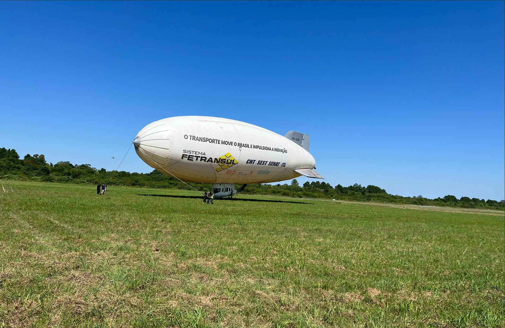

Foi durante a entrevista para a Divelog que o presidente da Federação das Empresas de Logística e de Transporte de Cargas no Rio Grande do Sul (Fetransul), Afrânio Kieling, presenciou a chegada do primeiro dirigível produzido com tecnologia nacional a Porto Alegre. “É uma coisa incrível”, narrou ao telefone. A aeronave ADB-3-3 saiu de São Carlos, em São Paulo, em direção à capital gaúcha no dia 17 de março. Com 48 metros de comprimento e 17 metros de altura, o dirigível aterrissou num aeroclube na zona sul de Porto Alegre no final da manhã desta terça-feira (28). Em solo, um caminhão, seis automóveis e uma equipe de 15 pessoas aguardavam para garantir o pouso seguro do equipamento.
A vinda da aeronave faz parte da mobilização da Fetransul para um evento do setor que ocorre junto à edição da South Summit Brazil, que começa nesta quarta e segue até sexta-feira no Cais Embarcadero, na Orla do Guaíba. “O transporte é um setor muito esquecido, muito sofrido. A última vez que ele foi assunto nacionalmente foi durante a greve. Por isso resolvemos trazer o dirigível e chamar a atenção para a importância do nosso setor”, explicou Kieling, em entrevista a Divelog.
O presidente fez questão de destacar a relevância da cadeia de transportes. “É ela que move o mundo. É ela que transporta todo o PIB produzido. O agro é importante, com certeza, mas sem a logística, a produção não chega a lugar nenhum. Precisamos falar sobre isso”, ressalta.
Com acesso gratuito, o evento “A logística desembarca na South Summit” promove uma série de debates sobre o desenvolvimento do setor, reunindo empresários, startups e empresas com foco em tecnologia e inovação. “O transporte não é só o caminhão, todo o setor tem alta tecnologia, mas ainda precisamos avançar muito. E quem ganha com tudo isso é a sociedade”, pontua.